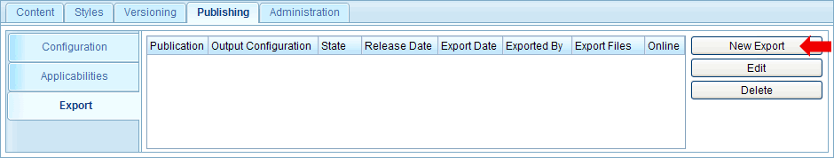
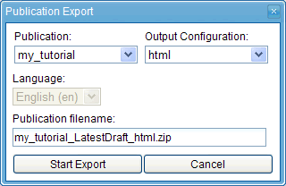
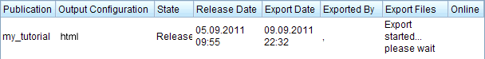
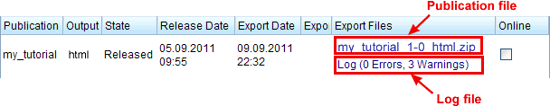
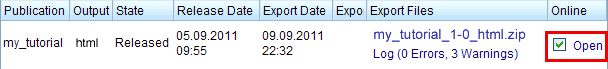

1.8.3. Export an HTML publication
We are now ready to export a publication in HTML format. Therefore switch to the "Export" tab of the "Publishing" workspace:

Figure 1.8.8. List of exported publications
This tab shows a list of all exported publications for the currently opened product version (and the currently selected language). Because we did not export a publication yet, the list is empty. To start a new export, click the "New Export" button next to the list. This will open the publication export dialog:

Figure 1.8.9. Export dialog
In this dialog, select the previously created publication configuration ("my_tutorial") and the HTML output-configuration. You can also enter a filename for the exported publication. To follow this tutorial, leave the default filename. Notice that the default filename has the extension ".zip". This is because the HTML publication will be exported as a ZIP compressed archive which contains the HTML and image files.
Click the "Start Export" button to start the export. This will close the dialog and the export will be added to the exported publications list. As long as the export is running, the "Export Files" column will show the text "... please wait".

Figure 1.8.10. Running export
Depending on the amount of content in the publication, the export can take some time. The export is executed completely on server side. Therefore you can log out and even turn off the client computer while the export is processed on server-side. Later on you can log in again to see if the export process is already finished. If the export finished successfully, two download links are shown: one for the exported publication and one for the export log (see screenshot below).

Figure 1.8.11. Download files after successful export
You can now click on the publication file to download the publication. Alternatively, you can view the publication online, i.e. without having to download the exported ZIP file. For this check the checkbox in the "Online" column. This will extract the publication in a configurable "online" directory. By default this is a directory within the Docmenta web-application directory. To open the extracted publication in a new browser window, click the link beside the checkbox.

Figure 1.8.12. Viewing the publication online